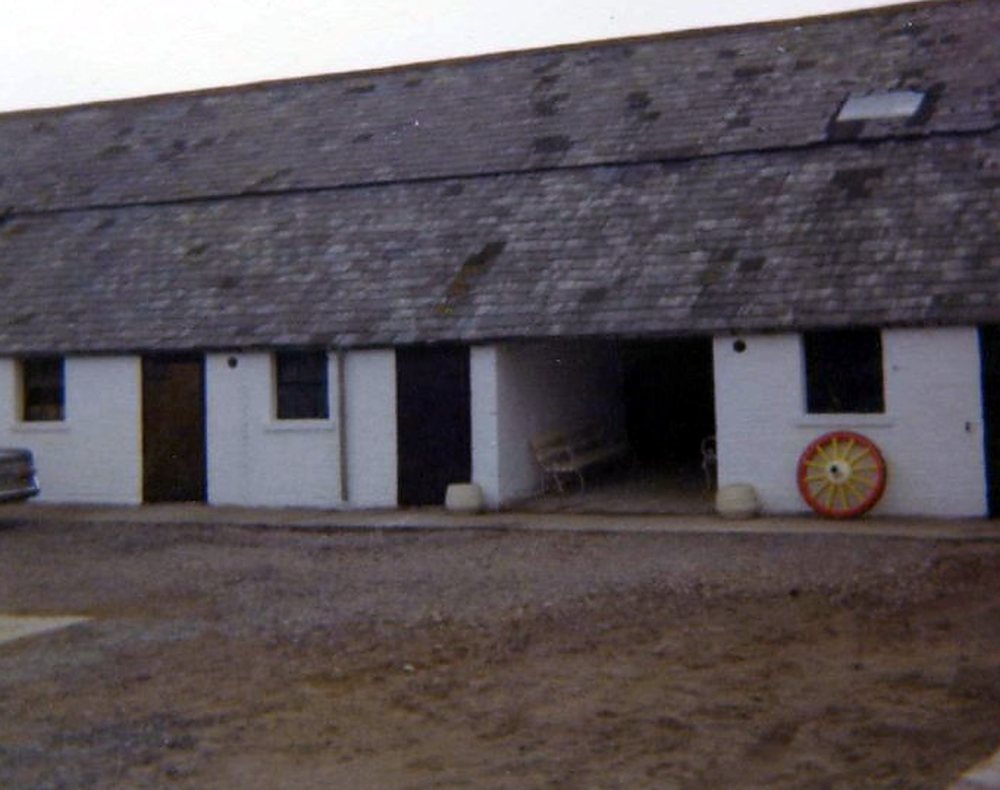

1891–1894: the farmyard in the newspapers
The earliest incidents on file come from the local papers of the 1890s, when John Williams farmed Great House under the Bute estate.
November 1891 — Three geese taken from Great House Farm: a man charged
- Record:
EV-0010 (Legal Wiki, Evidence Register)
“Robert Williams, a mason’s labourer, was on Tuesday charged … with stealing three geese, the property of Mr. John Williams, Great House Farm, Llandough, on November 11, 1891.”
What the record shows. A newspaper of November 1891 reported that a mason’s labourer named Robert Williams was charged with stealing three geese belonging to Mr John Williams of Great House Farm, Llandough, on 11 November 1891, and was remanded to Penarth.
What it does not show. The cutting does not name the newspaper, its date or page, and it does not record how the case ended. It shows a charge, not a conviction.
3 August 1894 — Swine fever at Great House: five pigs slaughtered
- Record:
EV-0247 (Legal Wiki, Evidence Register)
What the record shows. The Barry Dock News reported swine fever at Llandough: a Mr Williams of Great House kept a herd of more than twenty pigs and lost at least five, slaughtered under the animal-health rules of the day.
What it does not show. The report identifies the farmer only as Mr Williams of Great House. It is an animal-health order, not a crime.


The stable range, from the farm’s own album (Part 1, no. 128). Source: Wayback Vault, album image.